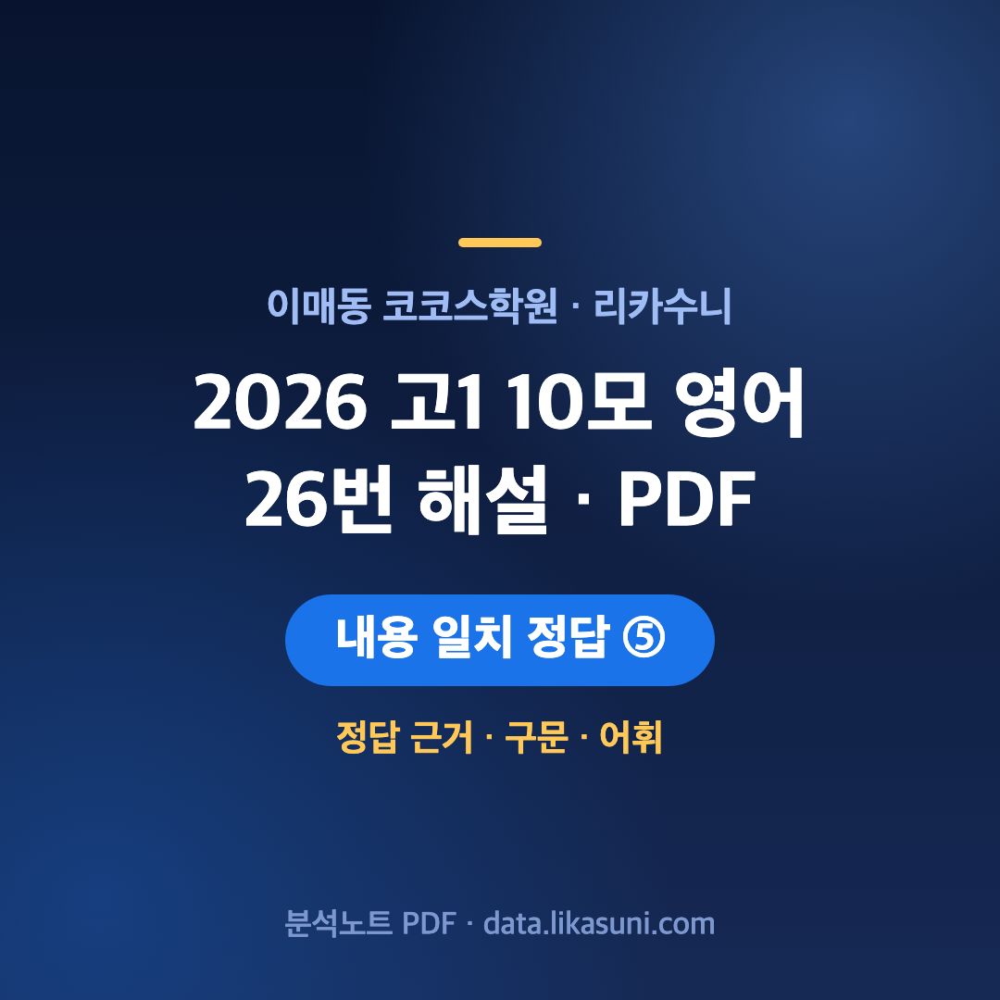
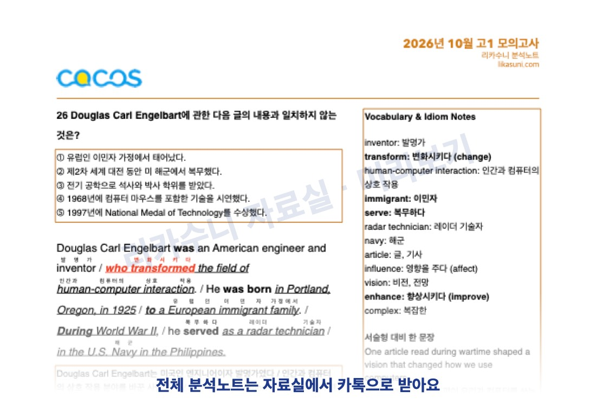

리카수니 분석노트 해설 · 이매동 코코스학원
2026 고1 10모 영어 26번 내용 일치 해설·분석이에요. (2026 10월 고1 영어 모의고사 26번 · 내용 불일치 · Douglas Carl Engelbart · 정답 ⑤)
정답 근거, 선택지 확인 순서, 구문(It was ~ that 강조구문 · 관계부사 where · 계속적 용법 which), 어휘를 정리했고 분석노트 전자책·pdf 보는 곳은 글 아래에 있어요.
안녕하세요, 이매동 코코스학원 리카수니 원장입니다.
학생 요청으로 만든 분석노트를 바탕으로 정리했어요. 시험지를 옆에 펴 놓고 보시면 더 잘 보여요.
| 한눈에 보는 정답 · 시험: 2026년 10월 고1 전국연합학력평가 영어 · 번호: 26번 (Douglas Carl Engelbart에 관한 글의 내용과 일치하지 않는 것) · 정답: ⑤ 1997년에 National Medal of Technology를 수상했다. |
인간과 컴퓨터의 상호 작용 분야를 바꾼 발명가 Douglas Carl Engelbart의 일생을 소개하는 글이에요.
흐름은 1925년 유럽인 이민자 가정에서 출생 → 제2차 세계 대전 중 해군 레이더 기술자 → 전쟁 중 읽은 글로 비전을 얻음 → 전기 공학 석사·박사 → 1968년 컴퓨터 마우스 시연 → 1997년 Turing Award, 3년 뒤 National Medal of Technology예요.
| · 근거 1: 마지막 문장에서 1997년에 받은 상은 Turing Award라고 해요. · 근거 2: National Medal of Technology는 '3년 후(three years later)'에 받았다고 해요. 즉 2000년이에요. → 1997년에 National Medal of Technology를 받았다는 ⑤가 글과 맞지 않아요. 정답 ⑤예요. |
· ① 유럽인 이민자 가정에서 태어났어요. → 일치
· ② 제2차 세계 대전 동안 필리핀에 있는 미 해군에서 레이더 기술자로 복무했어요. → 일치
· ③ 전기 공학으로 석사와 박사 학위를 받았어요. → 일치
· ④ 1968년 학회에서 컴퓨터 마우스를 포함한 기술을 시연했어요. → 일치
내용 일치 문제는 연도 옆 'three years later' 같은 시간 표현을 꼭 계산해 보세요. 상 이름과 연도를 바꿔 놓는 함정이 자주 나와요.

▲ 2026 고1 10모 영어 26번 내용 일치 해설·분석 pdf 분석노트 미리보기
| 1) It was + 강조어구 + that ~ (~한 것은 바로 …이었다) → It was during this time that he read an article that influenced his vision (2026년 10월 고1 26번) 2) be born to a family (~ 가정에서 태어나다) / serve as ~ (~로 복무하다) 3) 관계부사 where (= and there): Berkeley, where he focused on ~ 4) 과거분사 후치 수식 held in ~ / 전치사 including 5) 계속적 용법 which (앞 문장 전체를 받음) + became |
| 영어 | 뜻 |
|---|---|
| inventor | 발명가 |
| transform | 변화시키다 (= change) |
| human-computer interaction | 인간과 컴퓨터의 상호 작용 |
| immigrant | 이민자 |
| serve | 복무하다 |
| radar technician | 레이더 기술자 |
| navy | 해군 |
| article | 글, 기사 |
| influence | 영향을 주다 (= affect) |
| vision | 비전, 전망 |
| enhance | 향상시키다 (= improve) |
| earn | 받다, 얻다 (= obtain) |
| master's degree | 석사 학위 / doctoral degree 박사 학위 |
| electrical engineering | 전기 공학 |
| demonstrate | 시연하다 (= show) |
| monumental | 기념비적인 |
| contribution | 공헌 |
| 서술형 대비 분석노트에 '서술형 대비 한 문장'(One article read during wartime shaped a vision that changed how we use computers.)과 영어 핵심 요약(Core Summary)을 정리했어요. 학사·석사·박사 학위 표현(bachelor's · master's · doctoral degree, ph.d.)도 함께 넣었어요. |
| 📂 2026 고1 10모 영어 26번 분석노트 전자책·pdf 보는 법 자료실에서 이 문항 분석노트를 전자책으로 바로 볼 수 있어요. (끊어 읽기·해석·구문·어휘 2쪽) 인쇄용 pdf 는 카카오 로그인 후 카톡으로 받을 수 있고, 다른 번호도 요청할 수 있어요. 회차 자료와 전과목 문제지·정답 pdf 는 같은 페이지 위쪽 회차 메뉴에서 볼 수 있어요. ▶ 2026 고1 10모 영어 26번 해설·전자책 https://data.likasuni.com/moe/go1/2026-10/eng/26/ |
Q. 2026 고1 10모 영어 26번 내용 일치 해설·분석 정답은?
A. ⑤ 1997년에 National Medal of Technology를 수상했다.
Q. 분석노트 pdf 는 어디서 받나요?
A. 리카수니 자료실(data.likasuni.com)에서 카카오 로그인 후 카톡으로 받을 수 있어요. 위 안내의 링크로 이동하세요.
이상 2026 고1 10모 영어 26번 내용 일치 해설·분석 pdf 정리였어요. 궁금한 점은 댓글로 남겨 주세요.
| 🏫 이매동 코코스학원 안내 분당 이매동 코코스학원은 초등·중등·고등 영어와 수학을 가르쳐요. 모의고사·수능특강·내신 대비가 궁금하시면 편하게 문의해 주세요. · 홈페이지: https://www.cocosedu.co.kr/ · 주소: 경기 성남시 분당구 판교로 476 2층 |
#2026고110모영어 #2026고110모영어분석 #고110모영어 #고110모26번 #2026년10월모의고사 #2026년10월고1영어 #10모영어내용일치 #10모영어pdf #내용일치 #DouglasEngelbart #영어분석노트 #이매동영어학원 #코코스학원 #리카수니